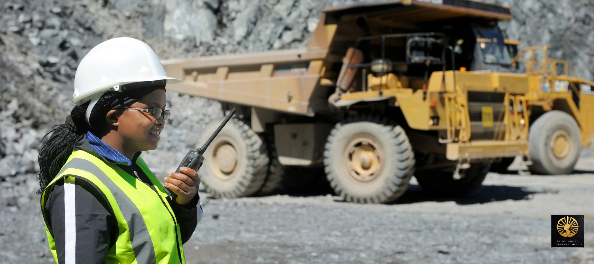

When most people hear the word "mining", they picture scarred landscapes, muddy rivers and profits that leave town as fast as the trucks do. That picture isn't always wrong. But it isn't the whole story either, and in the Geita region of north-western Tanzania, a group of determined women is busy writing a very different one.
Shimu Mining Cooperation Ltd. was founded in 2019 as a women-led mining cooperative and registered NGO. From day one, the idea was simple but bold: mining should build up a community, not hollow it out. That means fair work, safe conditions, respect for the land, and a share of the value staying right where it was dug from the ground.
In this article, we'll look at what sustainable mining in Tanzania actually means in practice, why it matters so much in a gold region like Geita, and how Shimu is turning good intentions into everyday habits. If you care about where your gold comes from, or simply love a story about people doing things the right way, read on.
Geita is one of Tanzania's best-known gold regions. For generations, gold has meant income, opportunity and hope for thousands of families here. Much of that work is done by small-scale and artisanal miners: ordinary people working with basic tools, often without much support, training or safety equipment.
That's where the risks creep in. Without the right know-how, small-scale mining can leave behind open pits, cleared forest, eroded soil and polluted water. Workers can be exposed to dangerous chemicals and unsafe shafts. And when the gold is sold on through long chains of middlemen, the people doing the hardest work often see the smallest share of the reward.
Here's the thing, though: none of this is inevitable. The problems come from how mining is done, not from mining itself. Change the methods, the training and the ownership, and you change the outcome. That's exactly the gap sustainable mining sets out to close, and it's the gap Shimu was created to fill.
In our view, this is one of the most hopeful things happening in African mining right now. Real change rarely arrives from the top down. It grows from local groups who know the land, know the people and have every reason to protect both.
Mining has long been seen as a man's world. Women have always been part of it, sorting ore, carrying loads, processing and trading, yet they've rarely had a seat at the table when decisions were made. Shimu turns that upside down.
As a women-led cooperative, Shimu puts women in charge of the work and the direction of the organisation. This isn't just about fairness, although fairness matters enormously. It's also about results. When women earn and control income, the benefits tend to spread quickly through their families: school fees get paid, meals get better and households become more resilient.
The cooperative structure adds another layer of strength. Instead of individuals working alone and selling cheaply, members pool their effort, share knowledge and negotiate together. That brings:
There's also a quieter benefit that's easy to miss: confidence. Every woman who learns a new skill, takes on a leadership role or speaks up for her community becomes a role model for the next generation of girls in Geita. That kind of change lasts far longer than any single gold seam.
Sustainable mining starts with a simple promise: leave the land in a state the next generation can still use. For a community that farms, fetches water and raises children on the same ground it mines, that promise is personal.
Shimu's approach to responsible gold mining focuses on a few practical priorities:
None of this is glamorous, and that's rather the point. Sustainability isn't one big gesture. It's hundreds of small, sensible decisions made every single day by people who care about the place they call home.
The environmental side of sustainable mining gets most of the headlines, but the social side is just as important. A mine can be spotless and still fail the people around it if the money, skills and opportunities all disappear elsewhere.
Because Shimu is both a cooperative and a registered NGO, community benefit is built into its DNA rather than bolted on as an afterthought. The aim is for mining income to strengthen local life: supporting families, encouraging education and creating steady work for women who might otherwise have few options.
Safety is a big part of this too. Proper training, sensible working practices and looking out for one another reduce accidents and illness. A healthy miner is a productive miner, and more importantly, a parent who comes home safely every evening.
Then there's transparency. Ethical buyers and jewellers increasingly want to know exactly where their gold comes from and how it was produced. A well-organised cooperative with clear practices can answer those questions honestly. That openness builds trust, and trust opens doors to fairer deals.
Shimu's journey is still unfolding, and that's what makes it exciting. Every season brings new skills, new members and new chances to prove that sustainable mining in Tanzania isn't a nice idea on paper. It's something real people are doing, right now, on real ground.
The bigger picture matters here. If a women-led cooperative in Geita can show that mining can be fair, safe and kind to the environment, it offers a model others can follow across Tanzania and beyond. Small-scale mining supports millions of livelihoods worldwide. Imagine what could happen if even a fraction of it worked the Shimu way.
Gold has always been precious. At Shimu, we believe the way it's mined should be precious too.
Sustainable mining means extracting minerals in a way that protects the environment, keeps workers safe and makes sure local communities share in the benefits, both now and for future generations.
Shimu is a women-led mining cooperative and registered NGO based in the Geita region of Tanzania. It was founded in 2019 and is run by and for its members.
Women are often left out of decisions and earnings in mining. A women-led cooperative gives them ownership, fairer income and a stronger voice, and those benefits tend to flow directly to families and communities.
Shimu operates in Geita, one of Tanzania's leading gold regions, with a focus on responsible small-scale gold mining.